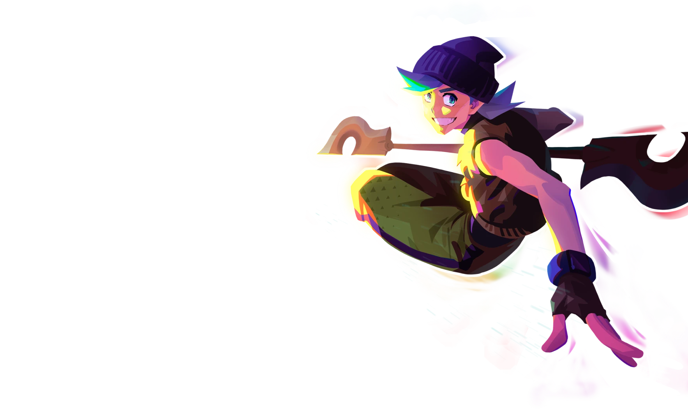
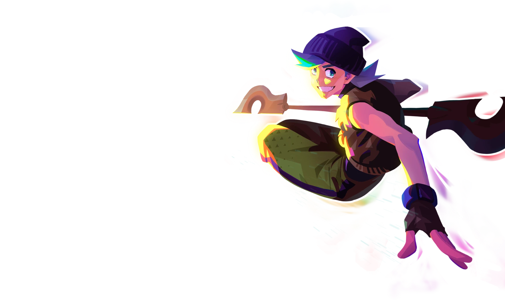

ReadMe (Instrutions)
Bienvenido al primer PROJECT BREAK. Después de varias semanas de duro trabajo vamos a poner en práctica todo lo que has aprendido. Vas a crear un Dasboard en el que podrás ver 4 elementos:
- Un reloj digital 24h + Fecha
- Una estación meteorológica
- Un creador de contraseñas seguras
- Un listado de links interesántes
(Además de imagenes random de fondo.)
Cada uno de ellos será independiente entre sí. Se generará una página propia y un script propio. Las CSS también pueden ser propias o generales. Una vez tengas los cuatro proyectos hechos los uniremos en el `index.html` y funcionarán a la vez. Desde el index se podrá acceder a cada página, y habrá cambios si está dentro de la página o en el `index.html`. Aquí puedes ver el ejemplo: https://carlosdiazgirol.github.io/dashboard/ Es un ejemplo de como lo puedes hacer pero puedes dar rienda suelta tu imaginación, siempre y cuando cumplas con los objetivos. Simepre puedes añadir más funcionalidades si lo deseas. Una vez tengas el proyecto finalizado, también puede ser antes, lo subiras a github pages para poder verlo en internet. Para poder subir nuestro proyecto a github pages previamente lo tendremos que tener en nuestro repositorio. Una vez ahí iremos a `settings` (está en el menú de cabecera) y dentro aparecerá en el menú lateral `pages`. Clicka y al entrar solo tienes que seleccionar la `branch`(rama) `main`. Y pulsaremos `SAVE`. Esperaremos un par de minutos, refrescaremos esa página y nos dará una URL. Ahí podras ver tu proyecto en internet. Vamos a ver que hay que hacer en cada uno de los proyectos:Reloj digital 24h + Fecha:
¿Como funciona?
...
¿Qué usaremos?
...
PISTAS PISTAS Y CONSEJOS
...